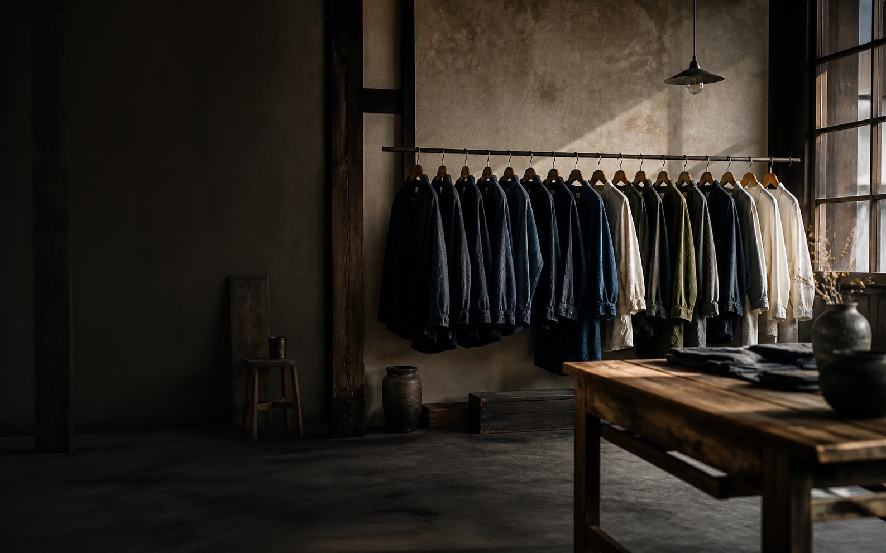
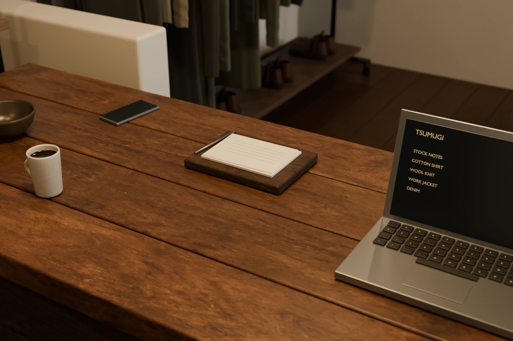

SELF-INITIATED PROJECT / VINTAGE STORE
一点物を選ぶ体験を、
お店と同じように
架空の古着店『TSUMUGI』のWebサイト。生地や仕立て、着込まれた表情を見ながら、自分の暮らしに合う一着を選ぶ体験を、ブランドの世界観と商品の情報設計から考えました。
自主制作のため、実在する店舗からの受託案件ではありません。商品・価格・人物・店舗情報は作品内の設定です。
サイトを見る
ブランドの空気感を表現したAI生成画像。
01 / BRIEF
想定した課題と制作の目的
- 想定する顧客
- 年代やブランドだけでなく、生地・仕立て・今の服との合わせやすさで古着を選びたい人をペルソナに想定。店主の服の選び方に共感しながら、サイズや状態も丁寧に確かめたい、という仮説を置きました。
- 想定する課題
- 一点ごとにサイズや状態が異なる古着は、雰囲気のよい写真だけでは選びきれないため店の価値観を伝えることと、購入を検討するための情報を見つけやすくすることの両立を目指しました。
- 制作の目的
- 店を知る、商品を探す、一着を詳しく見る、購入手続きへ進む。世界観をぶらさずに顧客体験を実現することかつ、管理側の商品や記事を更新する運用まで含めて制作すること。を目的としました。
- 商品設定
- ジャケット、シャツ、ニット、パンツなどの一点物を扱う古着店を想定し、店舗のコンセプトに沿うものを選定しました。
02 / DESIGN DECISIONS
デザインに込めた意図
服の表情が残る余白
生成りの背景と落ち着いた緑、細い罫線を軸に構成。色や装飾が商品より先に目に入らないよう、布の色・織り・経年の表情を見せる余白を設けました。
コンセプトと商品を伝える
店のイメージには光や素材感のある写真を、商品には一着を見比べやすいよう撮り方を統一した写真を使い分けました。コンセプトを伝える役割と、商品を確かめる役割を分けています。
見出しと情報にそれぞれの役割を
見出しにはセリフ体、説明には読みやすいサンセリフ体を使用。価格やサイズなどの判断材料を、ブランドの語り口の中に埋もれさせないよう整理しました。
03 / INFORMATION ARCHITECTURE
共感から購入の検討への体験設計
- 店の世界観・選び方
- 商品一覧・絞り込み
- 写真・価格・商品説明
- サイズ・状態の確認
- カート
- 購入手続き
Aboutではそれぞれの服を選ぶ基準を、Journalでは採寸や手入れなどの考え方を伝えるために作成しました。商品を探す導線に加えて、店主の姿勢を知ってから選べる導線も用意しました。
04 / PROCESS & SCOPE
制作工程と実装範囲
- 制作の進め方
- ブランドの方向性、画面構成、画像の修正指示、改善方針を決定し、AIを活用して画像・文章・コードの作成、レビューや検証を進めました。
- 画像
- 商品画像とこのページ冒頭の店舗イメージには、AI生成画像を使用しています。
- 実装
- 画面幅に応じたレスポンシブデザイン、商品一覧と絞り込み、商品詳細、カート・購入手続き画面、About・Journalを制作しました。実際の運用を想定し、管理側には商品・記事などの編集画面を設けています。
- 公開
- HTML・CSS・JavaScriptとReactを使い、制作した画面を公開用にビルドしてGitHub Pagesで配信しています。

Blenderで制作した店舗空間の検討画像。Webの先にある店舗空間も設計
店舗空間をBlenderで制作。木材・布・金属の質感、衣服の配置、窓からの光と照明を調整し、店の空気感を立体でも検討しています。
掲載画像はBlenderのレンダーをWeb用に圧縮したものです。空間の制作は継続中です。
05 / VALIDATION & LIMITS
制作において確認したこと、今後検証すること
- 公開用ビルドで、各ページのタイトル・説明文、参照ファイル、配信先のパスと公開版の整合性を検証しています。
- 商品を羅列するだけでなく、このお店が何を大切にしているのかを読んで共感を呼ぶことを狙い、記事ページなどを作成しました。
顧客像と課題は制作上の仮説です。購入率や売上の改善効果は測定していません。